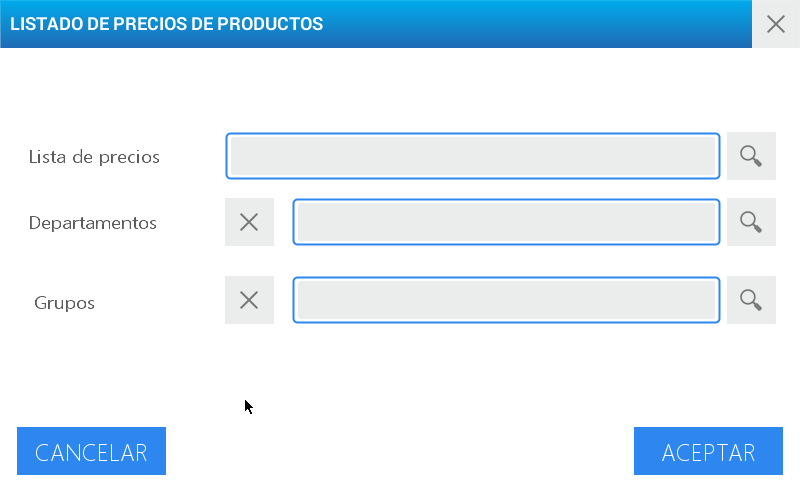

Reports
It allows you to print, in continuous paper, the total amount of sales per day, item, or salesperson, as well as the groups, departments, and price lists.


| Report | Detail |
|---|---|
| Sales per day | Total amount of executed sales |
| Sales by salesperson | Total of sales executed by each SALESPERSON together with the PRE-PACKED ones. |
| Sales by PLU | Integral of sales of each PLU |
| Closing of sales | It deletes the total of sales from the memory |
| Groups’ Lists | Detail of the created groups |
| Departments’ Lists | Description of the active departments |
| Price Lists | Price List in use |
| PLU’s Prices | PLU’s Value in every price list or condition |
Sales per day
This option allows you to obtain the detail of the total of sales executed in accordance to the selected period.
Enter the menu by pressing the key
Select user and enter the password.
Press Enter
Choose the option Reports located in the bottom left quadrant of the screen.
You will see the complete module’s MENU on the screen. Press Sales by Day
Once you are in said section, use the filter to design the report according to your needs.
Activate the type of filter to use and/or the Detail Mode by pressing the gray boxes located in the beginning of every option. Once this operation is executed you can see a check mark in every space.
To use a filter by date, select the desired period using the date-time fields enabled for such purpose.
To make the report by salesperson, use the search menu to select the user for verifying.
The detail mode allows you to have more detailed information of the executed sales in the selected period:
- Date
- N.° of Ticket
- Subtotal
Press Enter
Sales by Salesperson
This access shows the total of sales executed by each SALESPERSON together with the PRE-PACKED ones.

To use this report select the module Sales by Salesperson and go on with the outlined steps as follows:
Activate the type of filter to use and/or the Detail Mode by pressing the gray boxes located in the beginning of every option. Once this operation is executed you can see a check mark in every space.
Select the desired period using the date-time fields enabled for such purpose.
To make the report by salesperson use the search menu to select the user for verifying.
The detail mode allows you to have more detailed information of the executed sales by the salesperson in the selected period:
- Date
- N.° of Ticket
- Subtotal
Press Enter
Sales by PLU
This parameter allows you to check the total of sales by each PLU generated in the scale.

To execute the sales by PLU’s report select the module Sales by PLU¨ and go on with the outlined steps as follows:
Select the desired period using the Filter by date field enabled for such purpose.
The PLU’s field allows you to obtain the detail of the sales of a product in particular. To do this, activate the search menu and select the PLU you want to analyze.
The fields of Departments and Groups allow you to further specify the report. Use the search menu to select them.
Press Enter.
Closing of sales
Here it is possible, once the necessary reports are elaborated, to DELETE FROM THE MEMORY the total of sales executed with the purpose of starting a new period.

To delete form the equipment’s memory the total of sales executed access the module Closing of Sales and press Close Sales located in the upper right margin.
After executing this action, a message to confirm or cancel the operation appears on the screen.
Group’s Lists
It allows you to obtain a direct printing of the available groups’ lists.
To obtain the detail of the groups created, press on the access Groups Lists and it will automatically print said report.
Departments’ List:
This option prints the loaded departments’ lists.
You can get the inventory of the departments generated in the scale by pressing on the access Departments’ Lists.
Then, it will automatically print said report.
Price List
It quickly and easily prints the active price list.

To get the detail of the sales executed in one of the price lists, select the module Price List and then go on with the outlined steps as follows:
Select the Price List you want to verify. For this, use the search menu.
The fields of Departments and Groups allow you to further specify the list you want to see. Activate the search menu to select them.
Press Enter.
PLU’s prices
Select this report when you need to have a detailed printing of a PLU’s value in each price list or condition.

To use this report follow these steps:
Access the module PLU’s Prices
Enter the PLU’s number you want to see or use the search menu to locate it.
Press Enter.